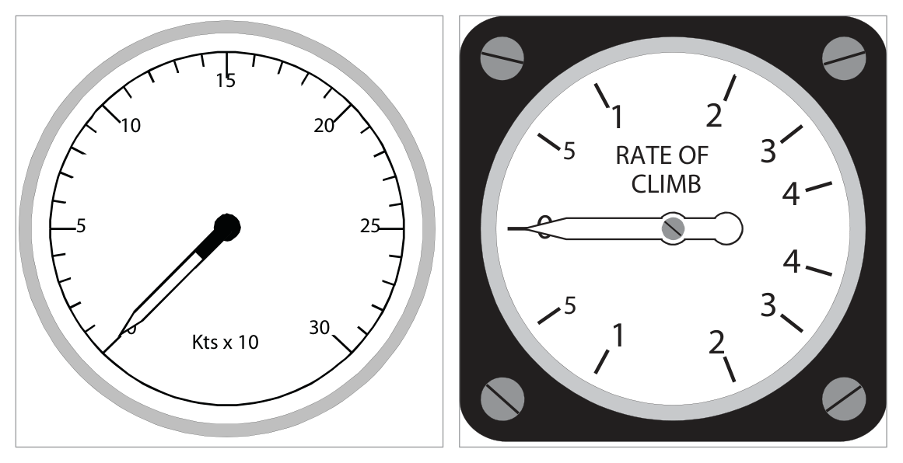

DGCA CPL/ATPL Study Notes — Instrumentation, Chapter 1
Compiled by Capt. Pankaj Pahil
1. Units & Standard Conversions
What this section covers: the measurement units used throughout instrumentation, and the exact conversion values you are expected to know verbatim for the DGCA exam.
Pilots must move fluently between metric, imperial and aviation-specific units. The values below are quoted exactly from the source and must be memorised — examiners test the precise figures.
Quantity
Units
Key conversions (verbatim)
Distance
Metres, kilometres, feet, nautical & statute miles
1 NM = 6080 ft or 1852 m; 1 statute mile = 5280 ft or 1609 m
Exam Tip: The two most-tested values are 1 NM = 6080 ft (note: the ICAO/SI nautical mile is 1852 m) and the standard atmosphere set 1013.25 hPa / 29.92 inHg / +15°C. Learn the whole standard-atmosphere line as one block.
2. Introduction — Common Instrument Problems
What this section covers: why all instrumentation — from a simple dial to a glass cockpit — shares the same four design challenges.
Pilots receive information about the aircraft's state — speed, altitude, position and attitude — through instruments and displays. Regardless of vintage, every instrumentation system must contend with four general characteristics:
Range — the span of values it can display.
Resolution — the smallest change it can show.
Accuracy — how closely the indication matches truth.
Reliability — consistency of correct indication over time.
3. Measuring Range versus Accuracy
What this section covers: the fundamental design trade-off between showing a wide range and reading it accurately, and how scale shape (linear vs non-linear) is used to manage it.
It is often necessary to show a large operating range yet still indicate accurately across the whole range. For example, an airliner limited to a maximum permitted airspeed of 350 knots might use an instrument designed to display up to 380 or 400 knots. But safety-critical speeds must be read to the nearest knot. If the entire range is squeezed onto a single revolution, each one-knot division becomes too small to read accurately — that is the range-versus-accuracy conflict.
Circular scale — linear
A simple indicator showing values over a range of 0 to 30 units uses evenly spaced graduations; the required accuracy governs the spacing.

Fig 1.1 / 1.2 — Circular scale, linear (left) and non-linear/logarithmic (right) — source p.3
Circular scale — non-linear
Some instruments must show changes more accurately at certain parts of the scale. A rate-of-climb indicator uses a logarithmic scale so that low rates of climb/descent are spread out and easily read, while high rates are compressed.
4. High Range / Long Scale Displays
What this section covers: four design solutions used when 360° of pointer travel cannot cover the required range with adequate accuracy.
Solution
How it works
Example reading
Single pointer, multiple revolutions
Pointer makes >1 revolution to cover range — can cause confusion
ASI showing 300 kt (Fig 1.3)
Moving pointer + moving scale
Pointer over fixed scale (tens), inset moving scale shows hundreds
ASI showing 33 kt (Fig 1.4)
Two concentric pointers
Small needle/inner scale reads tens; large needle/outer scale reads units
Rev counter showing 25½ % rpm (Fig 1.5)
Clock-style (three pointer)
Like hours/minutes/seconds — used on many altimeters
Exam Tip — three-pointer altimeter: long pointer = 100 ft per division (1000 ft/rev); middle pointer = 1000 ft per division (10 000 ft/rev); smallest pointer = 10 000 ft per division (100 000 ft/rev). The three-pointer altimeter has historically caused misreading accidents — this is why digital/counter displays were introduced.
5. Ergonomy & Standard Panel Layouts
What this section covers: human engineering of instruments, and the evolution from the "basic six" to the "basic T" layout.
Ergonomy (human engineering) is the science of the relationship between people and machines. For instruments it means designing displays unlikely to be misread and arranging them so interpretation is easy and correct.
From the "basic six" to the "basic T"
The flying instruments were first arranged as the basic six; other instruments were scattered to suit the manufacturer. Developments then led to the standard basic T.
What this section covers: the strengths of each presentation type, and why even "digital" altimeters retain a pointer.
Presentation can be analogue (a pointer on a dial) or digital (a row of numbers). With a 3-pointer analogue altimeter, an altitude such as 24 020 ft is harder to absorb at a glance than a digital readout. Digital numbers are easier to read accurately.
Why a pointer survives on digital displays: the human eye and brain cannot easily interpret rate information from moving numbers. Pilots pick up secondary rate-of-change information from the angular rate of a moving pointer, so a pointer is retained even on mainly-digital altimeters.
7. Electronic (Glass) Displays
What this section covers: the architecture of modern electronic flight decks and where the computing hardware physically lives.
Traditionally instruments lived on the instrument panel. With modern electronic displays, the displays remain on the flight deck where the crew can see and operate them, but the computing and power units are located remotely — usually in a separate compartment called the Avionics Bay or the Electrics and Electronics (E&E) Bay.
flowchart LR
S[Sensors / Probes] --> C[Computing units in Avionics / E&E Bay]
P[Power units] --> C
C --> D[Flight-deck displays CRT / LCD glass screens]
D --> Crew([Flight Crew])
8. Readability & Parallax
What this section covers: the eye reference point and the parallax error that arises when it is not respected.
A readable instrument is designed around an eye reference point — the anticipated position of the pilot's eye in normal viewing. Where an index/reference mark sits in front of a scale, the eye, index and scale must all be in line.
Parallax error: viewing an instrument from slightly to one side instead of from the front causes the index to appear against the wrong part of the scale. This is a reading error, not an instrument fault, and is avoided by viewing from the design eye reference point.
9. Coloured Arcs & Colour Standardization
What this section covers: the standard colour codes for conventional instruments and the extended CS-25 colour set for electronic displays.
Conventional (non-electronic) instruments
Colour
Meaning
Green
Normal operating range
Yellow / Amber
Cautionary range
Red
Warning, or unsafe operating range
Electronic displays — CS-25 standardization
Colour
Meaning
White
Present status
Blue
Temporary situation
Green
Normal operating range
Yellow / Amber
Cautionary range
Red
Warning, or unsafe operating range
Quick Revision Summary: Four instrument problems = range, resolution, accuracy, reliability. Standard atmosphere = 1013.25 hPa / 29.92 inHg / 760 mmHg / 14.7 psi / +15°C / +288 K / +59°F. 1 NM = 6080 ft. Three-pointer altimeter: 100 / 1000 / 10 000 ft per division. Pointer kept on digital displays for rate sensing. Parallax = off-axis viewing error. Conventional colours: green/amber/red; CS-25 adds white & blue.
Practice Questions & Detailed Answers
Chapter 1 of the source is descriptive and contains no question bank, so the questions below are instructor-generated in the DGCA style, tied directly to the section content above. Attempt each before revealing the answer.
Q1.In the ICAO standard atmosphere at mean sea level, the pressure is:
1000 hPa / 28.00 inHg
1013.25 hPa / 29.92 inHg
1025 hPa / 30.12 inHg
1013.25 inHg / 760 hPa
Correct Answer: (b) 1013.25 hPa / 29.92 inHg
Explanation: The standard MSL pressure set is 1013.25 hPa = 29.92 inHg = 760 mmHg = 14.7 psi. See Section 1 above.
Why the other options are wrong:
(a) — 1000 hPa / 28.00 inHg are not the standard values.
(c) — high-pressure values, not standard.
(d) — units transposed (inHg and hPa swapped).
Instructor's Note: Memorise the full standard-atmosphere line as a single block; it recurs in altimetry and air-data questions.
Q2.One nautical mile is equal to:
5280 ft
1609 m
6080 ft
1000 m
Correct Answer: (c) 6080 ft (also 1852 m)
Explanation: Per Section 1, 1 NM = 6080 ft or 1852 m.
Why the other options are wrong:
(a) & (b) — 5280 ft / 1609 m define the statute mile.
(d) — 1000 m is one kilometre.
Instructor's Note: Don't confuse the nautical mile (6080 ft) with the statute mile (5280 ft).
Q3.A pointer is retained on an otherwise digital altimeter primarily because:
it is cheaper to manufacture
the eye cannot easily read rate information from moving numbers
regulations forbid fully digital altimeters
it improves the instrument's accuracy
Correct Answer: (b) the eye cannot easily read rate information from moving numbers
Explanation: Section 6 — pilots pick up rate-of-change information from the angular rate of a moving pointer, which digits cannot convey at a glance.
Why the other options are wrong:
(a) — cost is not the stated reason.
(c) — no such prohibition.
(d) — the pointer aids rate sensing, not accuracy of the value.
Instructor's Note: Same logic underlies the "trend vector" on modern tape displays.
Q4.Viewing an instrument from slightly off to one side produces:
position error
parallax error
hysteresis
lag error
Correct Answer: (b) parallax error
Explanation: Section 8 — parallax is the reading error from not viewing along the eye reference point/index/scale line.
Why the other options are wrong:
(a) — position error is a pitot/static pressure error (Ch.2).
(c) & (d) — hysteresis and lag are mechanical/dynamic errors, not viewing-angle errors.
Instructor's Note: Parallax is a reading error — the instrument itself is correct.
Q5.On a conventional instrument, an amber (yellow) arc indicates:
normal operating range
cautionary range
warning / unsafe range
present status
Correct Answer: (b) cautionary range
Explanation: Section 9 — green = normal, yellow/amber = caution, red = warning/unsafe.
Why the other options are wrong:
(a) — green.
(c) — red.
(d) — "present status" is white, and only in the CS-25 electronic set.
Instructor's Note: White and blue appear only in the CS-25 electronic-display colour set.
Master Reference Tables
All numerical values in this chapter
Value
Meaning
Section
1 NM = 6080 ft = 1852 m
Nautical mile
1
1 statute mile = 5280 ft = 1609 m
Statute mile
1
1 Imp gal = 1.2 US gal
Volume conversion
1
1013.25 hPa / mb
Std MSL pressure
1
29.92 inHg / 760 mmHg / 14.7 psi
Std MSL pressure (other units)
1
+15°C / +288 K / +59°F
Std MSL temperature
1
350 / 380–400 kt
Example Vmax vs scale design
3
100 / 1000 / 10 000 ft per division
Three-pointer altimeter
4
Memory aids
"4 R's" of instrument problems: Range, Resolution, accuRacy, Reliability. Colour order (conventional): Green–Amber–Red = Go / Attention / Risk.